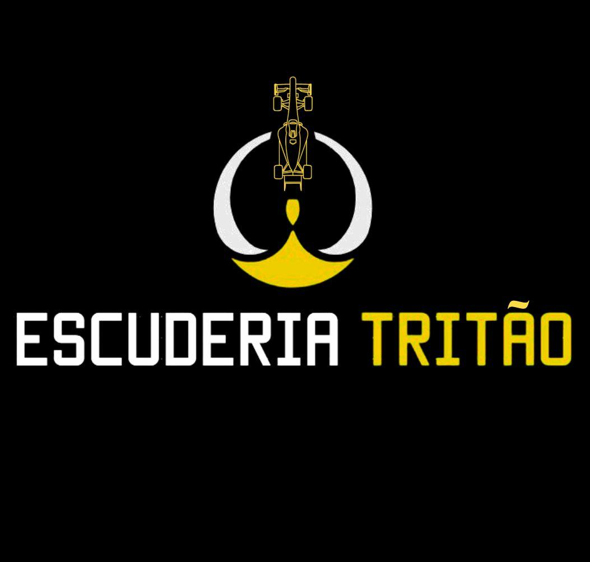
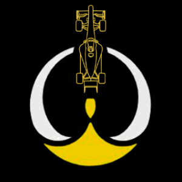
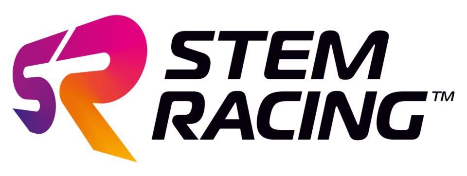
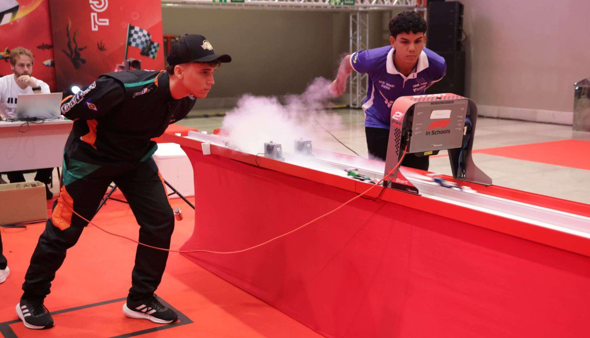
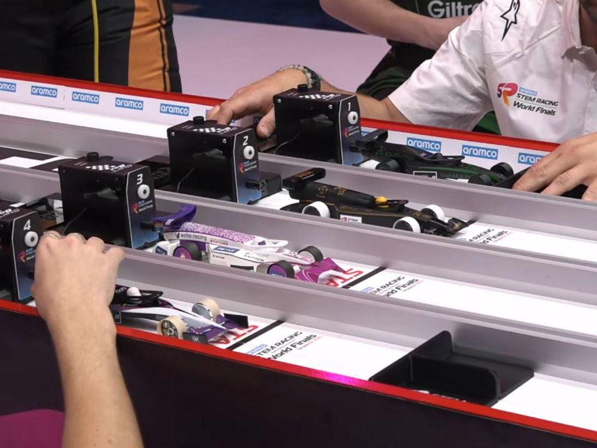

Identidade Visual
A identidade visual da Escuderia Tritão foi construída a partir de referências científicas, mitológicas e simbólicas que refletem a essência da equipe dentro da STEM Racing. O nome da equipe tem origem em dois pilares centrais: o foguete Tritão, desenvolvido pelo professor e técnico da equipe, e Tritão, a lua de Netuno, conhecida por sua órbita incomum.
Esse conceito está diretamente ligado à proposta da equipe de inovar, romper padrões e seguir caminhos não convencionais, características fundamentais dentro de uma competição que valoriza criatividade, engenharia e pensamento estratégico.


Logotipo
A logomarca da Escuderia Tritão foi criada para representar quem somos como equipe e o que acreditamos dentro da STEM Racing, unindo engenharia, identidade e significado. O círculo ao redor do símbolo foi pensado para representar as três pontas do tridente de forma abstrata. Essa forma contínua simboliza a união da equipe, o trabalho conjunto e o movimento constante.
No centro da logo está o carro de Fórmula 1, que representa diretamente o nosso projeto técnico. Ele simboliza o esforço, o aprendizado e a aplicação prática do conhecimento. A ponta central, alinhada ao carro, faz referência direta ao nome da equipe, Tritão, remetendo ao tridente, símbolo de força, liderança e união.
Missão, Visão e Valores
A Escuderia Tritão é reconhecida como uma equipe de alto desempenho, composta por membros resilientes e profundamente comprometidos com o projeto. Queremos levar os valores STEAM além da competição, nos consolidando como um grupo que personifica a dedicação e a constante evolução a cada desafio enfrentado.
Buscamos acrescentar na nossa vida pessoal uma experiência única, usando as metodologias STEAM no nosso cotidiano para resolver problemas e inovar sempre.

Competições Anteriores
A trajetória da equipe começou na temporada 2023/2024, durante o Nacional realizado em Brasília. Esse momento foi marcante, representando o início da nossa caminhada. Após essa primeira experiência, a equipe participou da competição Regional no Maranhão, em fevereiro de 2025, fundamental para aplicar novos conhecimentos.
Em seguida, participamos novamente do Nacional em Brasília, em março de 2025. Essa competição representou a continuidade do nosso crescimento, consolidando a experiência acumulada e reforçando o comprometimento da equipe com o desenvolvimento técnico, estratégico e colaborativo.
Nossa Modalidade de Robótica
A STEM Racing é uma competição internacional de robótica promovida pela Fórmula 1, em que os competidores precisam projetar, manufaturar e testar um protótipo de um automóvel da F1 em um bloco de poliuretano. Esses protótipos são lançados em uma pista de 20 m, impulsionados por um cilindro de CO2. Além disso, também é necessário criar e gerir uma Escuderia como em um modelo de empresa real.
A competição promove os valores da metodologia STEAM (Science, Technology, Engineering, Arts, Mathematics), visando o desenvolvimento de jovens estudantes nessas áreas, além de desenvolver um espírito competitivo e ampliar as capacidades de trabalhos coletivos.

